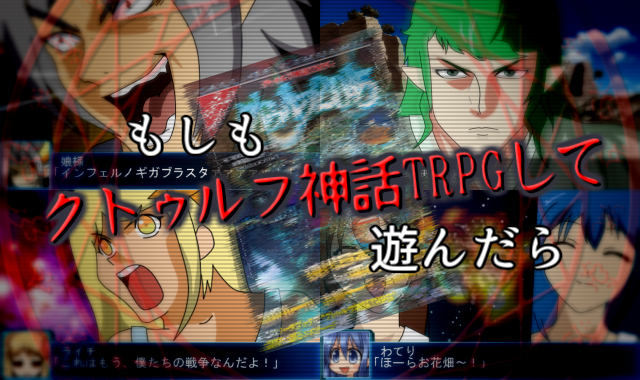

No.20 もしもクトゥルフ神話TRPGして遊んだら |
|
 |
|
| 作者：ジーノ | |
| ツクール：2000 | |
| ジャンル：見るksg | |
| 配信/投稿：両者ともに可 | |
| 作者コメント： 「この世ならぬ光景だった・・・前景は深い湖だった。これがハリ湖だろうか。 5分ほどすると湖面にさざ波が立ち始め、そこから何者かが現れ出てきた。 顔を内側に向けている。巨大な水生の生き物で、触肢がついている。 タコに似たところもあるが、西海岸にいる巨大タコよりもずっと大きい ―――多分10倍、いや20倍はある怪物だった。」 ――――オーガスト・ダーレス『破風の窓』 ハスター紹介の一文を抜粋。 もう4度目になったけど貴方に授けるクトゥルフ神話TRPGのロールプレイング例。 いつも通りやみっちちゃん達に遊んでもらいました。 今回使用するシナリオは2010より「奇妙な共闘」。 オマケは「クトゥルフ2015の解説」。 皆もクトゥルフ神話TRPG、やってみよう！ |
|
| 管理人コメント： CoC、本当に流行ってますね。 |
|
| ダウンロード(18.7MB) / 感想掲示板 | |
| 前の作品 / 次の作品 / TOPへ戻る | |